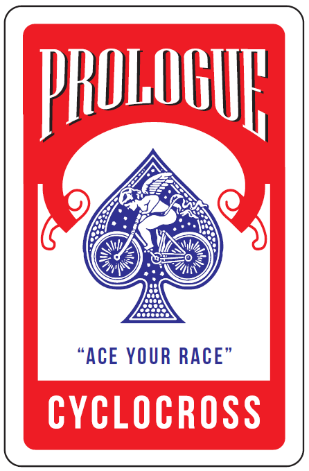
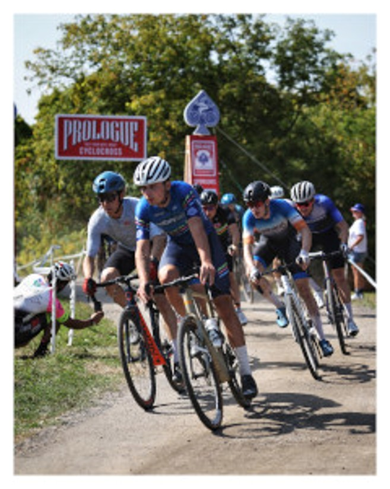
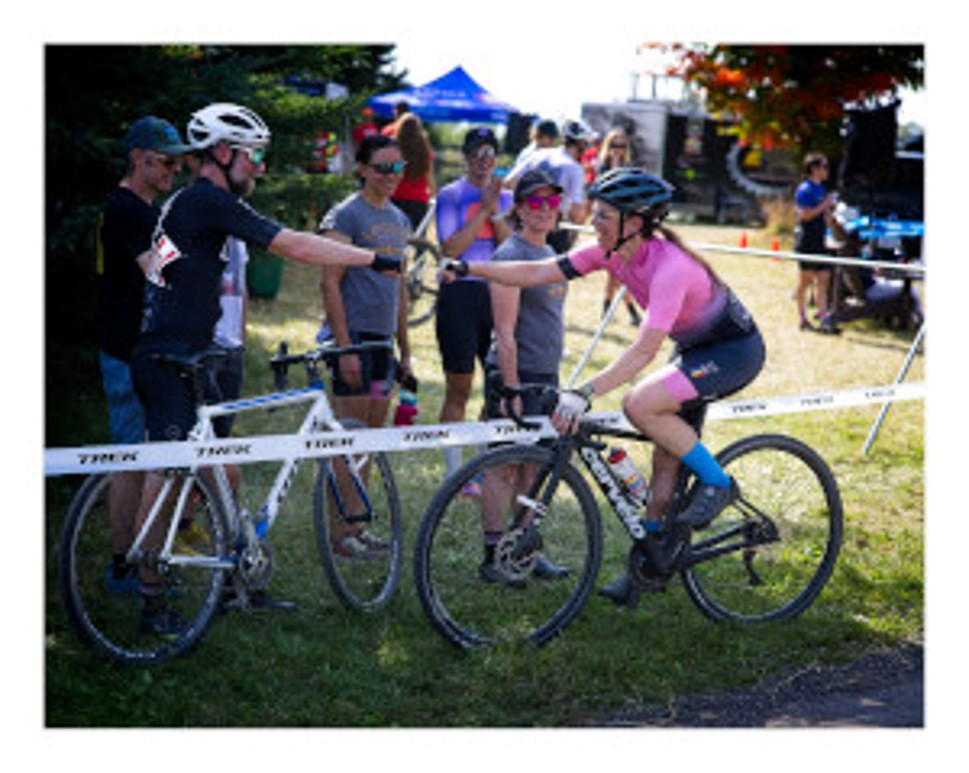
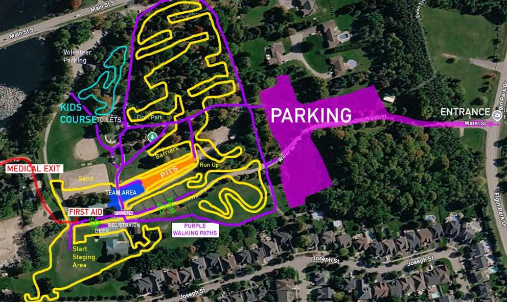

Prologue
Cyclocross
Uxbridge
GET READY TO RACE, RIDE AND DISCOVER CYCLOCROSS
Race. Ride. Discover CX. Prologue Cross lands at Elgin Park in Uxbridge on Sunday,
October 18, 2026.
Bring your cyclocross, gravel or mountain bike and jump in. Race the O-Cup, try a
beginner session, join the women-only race, or let kids 12 and under ride the fun
course.
Come for the racing. Stay for the community, cheering and cyclocross fun.
Sunday, October 18, 2026
Race Day Countdown
Powered by Uplifter
Prologue
Cyclocross
Uxbridge
GET READY TO RACE, RIDE AND DISCOVER CYCLOCROSS
Race. Ride. Discover CX. Prologue Cross lands at Elgin Park in Uxbridge on Sunday,
October 18, 2026.
Bring your cyclocross, gravel or mountain bike and jump in. Race the O-Cup, try a
beginner session, join the women-only race, or let kids 12 and under ride the fun
course.
Come for the racing. Stay for the community, cheering and cyclocross fun.
Sunday, October 18, 2026
Race Day Countdown
Powered by Uplifter
The Prologue Experience
Get ready to race, ride and discover cyclocross. Prologue Cross takes over Elgin Park in the heart of Uxbridge for one action-packed day welcoming experienced racers, first-time riders and families. The 2026 event brings together competitive Ontario Cup racing, approachable ways to try the sport and the lively community atmosphere that makes cyclocross so much fun.
Course designer and cyclocross veteran Jeff Faulds will transform the park's varied terrain into a true CX challenge. Expect tight turns, changing surfaces, short climbs, sand, barriers, dismounts and fast transitions that will keep riders moving, thinking and fighting for every second.

Trying cyclocross for the first time? We've got you covered. Try-a-CX offers adults an untimed, low-pressure introduction with no racing experience required. Women ready to take the next step can line up for a dedicated, timed beginner race in a supportive environment. Children aged 12 and under can get in on the action too, with a fun course created especially for younger riders.Bring a cyclocross, gravel or mountain bike, learn the basics and feel the excitement of riding a cyclocross course for yourself.
Prologue Cross is about more than racing. It's the full experience. Cheer on the action from the Second Wedge beer garden inside the little red barn, grab food and coffee from Bridge Social, and take in the music and professional race announcing. Uxbridge Physiotherapy will also be on site to support riders throughout the day.
Organized by the Uxbridge Cycling Club and Peterborough Cycling Club, with support from local partners, volunteers and the broader cycling community, Prologue Cross is where competition and community come together. Line up, lean in and join us for an unforgettable day of cyclocross in Uxbridge.


What you really need to know
Prologue Cross is an Ontario Cycling-sanctioned cyclocross event, but you do not need to be an experienced racer to participate. Here are the essentials:
Find a bike
Almost anything works except a fancy road bike. MTB, gravel, CX, single speed, even a strider!
Just want to try it out?
Join the Try-a-CX session for women, adults or children. It is a low-pressure way to learn what cyclocross is all about and ride the course without entering a sanctioned race.
- Time: Kids course open all day, 12:00 women-only timed, 12:30 all ages untimed and kids-course timed
- Adult fee: $20
- Children's fee: Free
- Registration: Day of – visit us at the Sign In Desk
Want to race for real?
Register by midnight on Thursday, October 15. Categories follow the OC CX structure (we agree - it's a little complicated…). Quick guide if you're new:
- Men: Category A = most challenging, Category C = least challenging, Age 35+ or 55+ = Masters groups
- Women: Category A = most challenging, Category B = least challenging, Age 35+ or 55+ = Masters
- Youth: register by age group (use age as of Dec 31, 2027 and U13 means 12 or under).
Note - Use your age at Dec 31, 2027. Geez ... math required
Show up on race day
Race day is Sunday, October 18, 2026 at Elgin Park in Uxbridge. Plan to arrive 60-90 minutes before your start time to park, check in, prepare your bike and complete any permitted pre-riding or warm-up.
Stick around after
Watch the racing, enjoy local food and drinks, a free physio treatment, music, and all the good vibes.
Schedule
RACE DAY on Sunday, October 18, 2026
Master Men (55+)
U15 Girls & Boys
U13 Girls & Boys
Master Men (35+)
All ages untimed
Women Cat B
Master Women (35+, 55+)
Single Speed
PRE-RIDE the Prologue CX course courtesy of the Uxbridge Cycling Club (UCC).
Important Steps to follow!
Before attending, complete the Ontario Cycling Club Try-out Participant Form
4:00 - 6:00 pm
The Course
Tackle the Terrain. Get Ready to Ride or Race.
Designed by cyclocross veteran Jeff Faulds, the 2026 Prologue Cross course will transform Elgin Park into a compact, spectator-friendly cyclocross venue.
Expect a mix of grass, dirt, corners, short climbs, sand, dismounts and traditional cyclocross features. Designed to challenge experienced racers while giving Try-a-CX participants an approachable introduction to the sport.

Deal Yourself In
Where: Elgin Park, 55 Elgin Park Dr, Uxbridge, ON L9P 1Z6
When: Sunday, October 18, 2026
Powered by Uplifter
Race Results
That's a wrap! Thanks for racing Prologue Cross at Elgin Park on
Sunday, October 18, 2026.
Official times and placings are live now.
Powered by RaceTiming.ca
Contact Us
Got questions about the race, registration, or event? We're here to help.
Whether you're a first-timer or seasoned racer, don't hesitate to reach out—we'll help you ace your CX day.